Modal Logic: Tableaux Examples
2026-02-18
Example 1: \(\Diamond(A \wedge B) \rightarrow (\Diamond A \wedge \Diamond B)\) in K
Example 1: \(\Diamond(A \wedge B) \rightarrow (\Diamond A \wedge \Diamond B)\) in K

\(\Diamond(A \land B) \rightarrow (\Diamond A \land \Diamond B)\)
Start by assuming it’s false.

\(\Diamond(A \land B) \rightarrow (\Diamond A \land \Diamond B)\)
False conditional means true antecedent and false consequent.
\(\Diamond(A \land B) \rightarrow (\Diamond A \land \Diamond B)\)
True \(\Diamond\) introduces world 1.1.

\(\Diamond(A \land B) \rightarrow (\Diamond A \land \Diamond B)\)
True conjunction gives us both \(A\) and \(B\) at 1.1.
\(\Diamond(A \land B) \rightarrow (\Diamond A \land \Diamond B)\)
When we introduce worlds that make the \(\Diamond\) sentences true, both branches close. So this is valid in K.
Example 2: \((\Diamond A \vee \Diamond B) \rightarrow \Diamond(A \vee B)\) in K
Example 2: \((\Diamond A \vee \Diamond B) \rightarrow \Diamond(A \vee B)\) in K
Let’s show this is a theorem in K.
\((\Diamond A \lor \Diamond B) \rightarrow \Diamond(A \lor B)\)
\((\Diamond A \lor \Diamond B) \rightarrow \Diamond(A \lor B)\)
The disjunction branches. We can’t do anything with the other line yet because there isn’t yet a 1.1.
\((\Diamond A \lor \Diamond B) \rightarrow \Diamond(A \lor B)\)
On the left branch, the True \(\Diamond\) rule introduces world 1.1 with \(A\) true there.
\((\Diamond A \lor \Diamond B) \rightarrow \Diamond(A \lor B)\)
Now world 1.1 exists, so the False \(\Diamond\) rule (line 3) applies: \(A \lor B\) must be false at 1.1.
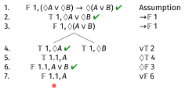
\((\Diamond A \lor \Diamond B) \rightarrow \Diamond(A \lor B)\)
The False \(\lor\) rule gives \(\mathbb{F}\, 1.1{:} A\), which clashes with line 5. The left branch closes. Now work on the right branch.
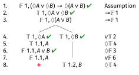
\((\Diamond A \lor \Diamond B) \rightarrow \Diamond(A \lor B)\)
On the right branch, the True \(\Diamond\) rule introduces world 1.2 with \(B\) true there.
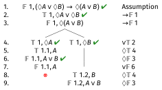
\((\Diamond A \lor \Diamond B) \rightarrow \Diamond(A \lor B)\)
World 1.2 now exists, so the False \(\Diamond\) rule (line 3) applies again: \(A \lor B\) must be false at 1.2.
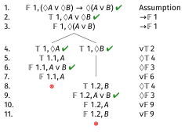
\((\Diamond A \lor \Diamond B) \rightarrow \Diamond(A \lor B)\)
Both branches close, so this is valid in K.
Example 3: \(A \rightarrow \Box \Diamond A\) in KT
Example 3: \(A \rightarrow \Box \Diamond A\) in KT
This should fail in KT. Let’s show it.
\(A \rightarrow \Box \Diamond A\)
The tree stays open. So this is not valid in KT.
Note that after line 4 we’ve completed all the rules we needed to use in K, so the first four lines show it is not a theorem in K.
The Landscape of Modal Logics

- Stronger logics are higher in the diagram
- If a formula is valid in a weaker logic, it is valid in all stronger logics above it
- If a formula is not valid in a stronger logic, it is not valid in any weaker logic below it
Example 4: \(A \rightarrow \Box \Diamond A\) in KB
Example 4: \(A \rightarrow \Box \Diamond A\) in KB
But this does hold in KB. Let’s see this.
\(A \rightarrow \Box \Diamond A\)
The B\(\Diamond\) rule gives us the contradiction.
Example 5: \(\Box(A \rightarrow B) \rightarrow (\Box A \rightarrow \Box B)\) in K
Example 5: \(\Box(A \rightarrow B) \rightarrow (\Box A \rightarrow \Box B)\) in K
This is the K axiom - it should be valid even in K.
\(\Box(A \rightarrow B) \rightarrow (\Box A \rightarrow \Box B)\)
False conditional means true antecedent and false consequent.
\(\Box(A \rightarrow B) \rightarrow (\Box A \rightarrow \Box B)\)
The nested false conditional unpacks: \(\Box A\) must be true and \(\Box B\) must be false at world 1.

\(\Box(A \rightarrow B) \rightarrow (\Box A \rightarrow \Box B)\)
False \(\Box\) introduces world 1.1: \(B\) must be false there.
\(\Box(A \rightarrow B) \rightarrow (\Box A \rightarrow \Box B)\)
World 1.1 now exists, so both True \(\Box\) rules fire: \(A \rightarrow B\) is true at 1.1 (from line 2), and \(A\) is true at 1.1 (from line 4). Note these are reusable rules, so lines 2 and 4 stay unchecked.
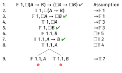
\(\Box(A \rightarrow B) \rightarrow (\Box A \rightarrow \Box B)\)
The true conditional at 1.1 branches: either \(A\) is false at 1.1 (clashing with line 8) or \(B\) is true at 1.1 (clashing with line 6). Both branches close, so this is valid in K.
Example 5: \(\Box(A \rightarrow B) \rightarrow (\Box A \rightarrow \Box B)\) in K
Another way to think about this is that it’s saying that if you have
- \(\Box(A \rightarrow B)\); and
- \(\Box A\)
you can derive
- \(\Box B\)
The general principle is that if an argument is valid, then putting a box in front of every premise and in front of the conclusion will preserve validity.
Example 6: \((\Box A \vee \Box B) \rightarrow \Box(A \vee B)\) in K
Example 6: \((\Box A \vee \Box B) \rightarrow \Box(A \vee B)\) in K

\((\Box A \lor \Box B) \rightarrow \Box(A \lor B)\)
False conditional: true antecedent and false consequent.
\((\Box A \lor \Box B) \rightarrow \Box(A \lor B)\)
The true disjunction branches: left branch has \(\Box A\), right branch has \(\Box B\). Work on the left branch first.
\((\Box A \lor \Box B) \rightarrow \Box(A \lor B)\)
False \(\Box\) (line 3) introduces world 1.1 on the left branch: \(A \lor B\) must be false there.
\((\Box A \lor \Box B) \rightarrow \Box(A \lor B)\)
World 1.1 exists, so True \(\Box\) (line 4, \(\Box A\)) fires: \(A\) is true at 1.1. Then False \(\lor\) gives \(\mathbb{F}\,1.1{:}A\), clashing with line 5. Left branch closes. Now the right branch.
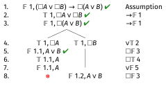
\((\Box A \lor \Box B) \rightarrow \Box(A \lor B)\)
False \(\Box\) (line 3) introduces world 1.2 on the right branch: \(A \lor B\) must be false there too.
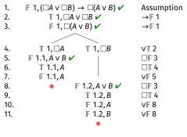
\((\Box A \lor \Box B) \rightarrow \Box(A \lor B)\)
This is valid in K. Intuitively, if either one of \(\Box A\) or \(\Box B\) is true, we can derive \(\Box(A \lor B)\).
Example 7: \((\Diamond A \wedge \Diamond B) \rightarrow \Diamond(A \wedge B)\) in K
Example 7: \((\Diamond A \wedge \Diamond B) \rightarrow \Diamond(A \wedge B)\) in K
This should fail; different worlds might make - worlds \(\Diamond A\) and \(\Diamond B\) true.
And the special case where \(B = \neg A\) also suggests it is invalid.
\((\Diamond A \land \Diamond B) \rightarrow \Diamond(A \land B)\)
Start in the usual way; left-hand side true, right-hand side false. The left-hand side is a true \(\wedge\), so I’ve just spelled it out.
\((\Diamond A \land \Diamond B) \rightarrow \Diamond(A \land B)\)
Lines 4 and 5 require introducing new worlds, and crucially we introduce different new worlds for each. The False \(\Diamond\) rule (line 3) must be applied at each. Start with world 1.1.
\((\Diamond A \land \Diamond B) \rightarrow \Diamond(A \land B)\)
\(A \land B\) must be false at world 1.1. Now apply the same rule at world 1.2.
\((\Diamond A \land \Diamond B) \rightarrow \Diamond(A \land B)\)
Now we must apply the False \(\land\) rule to lines 8 and 9. Start with line 8: \(A \land B\) false at 1.1 branches into \(\mathbb{F}\,1.1{:}A\) or \(\mathbb{F}\,1.1{:}B\).
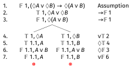
\((\Diamond A \land \Diamond B) \rightarrow \Diamond(A \land B)\)
The left sub-branch closes: \(\mathbb{F}\,1.1{:}A\) clashes with \(\mathbb{T}\,1.1{:}A\) at line 6. The right sub-branch (\(\mathbb{F}\,1.1{:}B\)) stays open. Now apply the False \(\land\) rule to line 9.
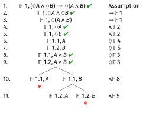
The tree stays open.
The right sub-branch of line 9 closes, since \(\mathbb{F}\,1.2{:}B\) clashes with \(\mathbb{T}\,1.2{:}B\) at line 7.
But the left sub-branch, with \(\mathbb{F}\,1.1{:}B\) and \(\mathbb{F}\,1.2{:}A\), remains open. World 1.1 has \(A\) true but \(B\) can be false, and world 1.2 has \(B\) true but \(A\) can be false.
Example 8: \(\Box(A \vee B) \rightarrow (\Box A \vee \Diamond B)\) in K
Example 8: \(\Box(A \vee B) \rightarrow (\Box A \vee \Diamond B)\) in K
\(\Box(A \lor B) \rightarrow (\Box A \lor \Diamond B)\)
Assume the formula is false at world 1. A false conditional gives us a true antecedent (\(\Box(A \lor B)\)) and a false consequent (\(\Box A \lor \Diamond B\)).
\(\Box(A \lor B) \rightarrow (\Box A \lor \Diamond B)\)
A false disjunction means both disjuncts are false: \(\Box A\) is false and \(\Diamond B\) is false at world 1. Note these are non-branching; we get both on the same branch.
\(\Box(A \lor B) \rightarrow (\Box A \lor \Diamond B)\)
False \(\Box\) (line 4) introduces world 1.1 with \(\mathbb{F}\,1.1{:}A\). Now the two reusable rules fire at world 1.1: True \(\Box\) (line 2) gives \(\mathbb{T}\,1.1{:}A \lor B\), and False \(\Diamond\) (line 5) gives \(\mathbb{F}\,1.1{:}B\). Lines 2 and 5 stay unchecked as reusable rules.
\(\Box(A \lor B) \rightarrow (\Box A \lor \Diamond B)\)
The true disjunction at line 7 branches: either \(A\) is true at 1.1 (closing against \(\mathbb{F}\,1.1{:}A\) at line 6) or \(B\) is true at 1.1 (closing against \(\mathbb{F}\,1.1{:}B\) at line 8). Both branches close, so the formula is valid in K.
Why is this valid?
Suppose \(\Box(A \lor B)\) is true at world 1 but \(\Box A \lor \Diamond B\) is false.
- Since \(\Box A \lor \Diamond B\) is false, both \(\Box A\) and \(\Diamond B\) are false at world 1.
- Since \(\Diamond B\) is false, \(B\) is false at all accessible worlds.
- So if at least one of \(A\) and \(B\) is true at each accessible world, as the premise says, and it’s never \(B\), it must always be \(A\).
- But that would make \(\Box A\) true, contradicting the assumption that it’s false.
So the assumption that the formula is false leads to a contradiction. It must be valid in K.
Example 9: \(\Diamond \Box A \rightarrow A\) in KT
Example 9: \(\Diamond \Box A \rightarrow A\) in KT
\(\Diamond \Box A \rightarrow A\)
Assume the formula is false at world 1. A false conditional gives a true antecedent (\(\Diamond \Box A\)) and a false consequent (\(A\) false at world 1).
\(\Diamond \Box A \rightarrow A\)
True \(\Diamond\) (line 2) introduces world 1.1: there must be an accessible world where \(\Box A\) holds.
\(\Diamond \Box A \rightarrow A\)
The T\(\Box\) rule gives us \(A\) true at 1.1: since \(\Box A\) is true at 1.1, and every world accesses itself in KT, \(A\) must hold at 1.1. But we have no way to get \(A\) true back at world 1, so the tree stays open. This formula is not valid in KT.
Reading off the countermodel
The open branch describes a model where the formula fails:
- There are two worlds: \(w_1\) and \(w_2\), where \(w_1\) accesses \(w_2\) (and each world accesses itself, as required by the T condition).
- \(A\) is false at \(w_1\) and true at \(w_2\).
- Since \(A\) is true at \(w_2\) and \(w_2\) only accesses itself, \(\Box A\) is true at \(w_2\).
- Since \(w_1\) accesses \(w_2\) and \(\Box A\) holds there, \(\Diamond \Box A\) is true at \(w_1\).
- So \(\Diamond \Box A\) is true but \(A\) is false at \(w_1\), and the formula fails.
The key point: \(\Box A\) being true somewhere accessible to \(w_1\) does not make \(A\) true at \(w_1\) itself, unless accessibility is symmetric.
Example 10: \(\Diamond \Box A \rightarrow A\) in KTB
Example 10: \(\Diamond \Box A \rightarrow A\) in KTB
All the rules of KT still hold in KTB.
The only difference is that there are now some new rules telling us that we can apply True \(\Box\) sentences and False \(\Diamond\) sentences back up the tree.
But since all the old rules hold, it’s fine to just start with where we ended last time.
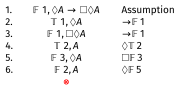
\(\Diamond \Box A \rightarrow A\)
Here’s where we were.
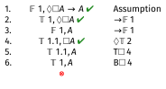
\(\Diamond \Box A \rightarrow A\)
By applying the distinctive rule for B we get \(A\) being true at the one place we’ve said it can’t be true. So the tree closes, and in KTB this is valid.
Example 11: \(\Diamond A \rightarrow \Diamond \Diamond A\) in K
Example 11: \(\Diamond A \rightarrow \Diamond \Diamond A\) in K
\(\Diamond A \rightarrow \Diamond \Diamond A\)
Assume the formula is false at world 1. A false conditional gives a true antecedent (\(\Diamond A\) true at 1) and a false consequent (\(\Diamond \Diamond A\) false at 1).
\(\Diamond A \rightarrow \Diamond \Diamond A\)
True \(\Diamond\) (line 2) introduces world 1.1: since \(\Diamond A\) is true at world 1, there must be an accessible world where \(A\) holds. We call it 1.1.

\(\Diamond A \rightarrow \Diamond \Diamond A\)
False \(\Diamond\) (line 3) is a reusable rule: since \(\Diamond \Diamond A\) is false at world 1, \(\Diamond A\) must be false at every world accessible from 1. World 1.1 is accessible from 1, so \(\Diamond A\) is false at 1.1.
Example 11: \(\Diamond A \rightarrow \Diamond \Diamond A\) in K
And there aren’t any other rules to apply, so the tableau is open.
The countermodel isn’t very elegant.
There are two worlds, \(w_1\) and \(w_2\). (Or \(w_{1.1}\) if you prefer).
The only \(R\) relation is from \(w_1\) to \(w_2\).
And \(A\) is true at \(w_2\).
Example 12: \(\Diamond A \rightarrow \Diamond \Diamond A\) in KT
If we go to KT, everything we’ve said in the tree so far is correct, but we have new rules to apply.
In particular, we have to apply the T rules.
But let’s start with where we were up to last time.
\(\Diamond A \rightarrow \Diamond \Diamond A\)
Now we have to go on to apply the T rules.
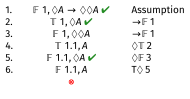
\(\Diamond A \rightarrow \Diamond \Diamond A\)
The T\(\Diamond\) rule: since \(\Diamond A\) is false at world 1.1, and in KT every world accesses itself, \(A\) must be false at 1.1 itself. But line 4 says \(A\) is true at 1.1, generating the contradiction. The branch closes. This formula is valid in KT.
Example 13: \(\neg \Box(A \wedge \neg \Box A)\) in K
Example 13: \(\neg \Box(A \wedge \neg \Box A)\) in K
\(\neg \Box(A \wedge \neg \Box A)\)
Assume the formula is false at world 1. False \(\neg\) gives us \(\Box(A \wedge \neg \Box A)\) true at world 1.
Example 13: \(\neg \Box(A \wedge \neg \Box A)\) in K
Line 2 is True \(\Box\), which is a reusable rule — it can only fire when we have an accessible world.
But no accessible worlds have been introduced, and no other rules apply. The tree stays open.
The countermodel: a single world \(w_1\) with no accessible worlds at all. \(\Box(A \wedge \neg \Box A)\) is vacuously true there (no accessible worlds to check), so \(\neg \Box(A \wedge \neg \Box A)\) is false at \(w_1\), as required.
Example 14: \(\neg \Box(A \wedge \neg \Box A)\) in KT
Example 14: \(\neg \Box(A \wedge \neg \Box A)\) in KT
In KT every world accesses itself, so the True \(\Box\) rule now has somewhere to fire. Let’s start from where we were.
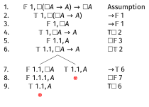
\(\neg \Box(A \wedge \neg \Box A)\)
In KT, world 1 accesses itself, so we can apply the True \(\Box\) rule at world 1.
\(\neg \Box(A \wedge \neg \Box A)\)
The T\(\Box\) rule (line 2) gives us \(A \wedge \neg \Box A\) true at world 1: since \(\Box(A \wedge \neg \Box A)\) is true at 1 and 1 accesses itself, the formula inside the box must hold at 1.
\(\neg \Box(A \wedge \neg \Box A)\)
True \(\wedge\) (line 3) gives both conjuncts: \(A\) true at 1 (line 4) and \(\neg \Box A\) true at 1 (line 5). Line 3 is checked.
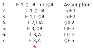
\(\neg \Box(A \wedge \neg \Box A)\)
True \(\neg\) (line 5) gives \(\Box A\) false at 1 (line 6). False \(\Box\) (line 6) introduces world 1.1 with \(A\) false there (line 7). Lines 5 and 6 are checked.
\(\neg \Box(A \wedge \neg \Box A)\)
True \(\Box\) (line 2) is reusable: now that world 1.1 exists, it fires there too, giving \(A \wedge \neg \Box A\) true at 1.1 (line 8). True \(\wedge\) on line 8 gives \(A\) true at 1.1 (line 9) — but line 7 says \(A\) is false at 1.1. Contradiction. The branch closes. This formula is valid in KT.
Why is this valid?
- Assume \(\Box(A \wedge \neg \Box A)\) is true at \(w_1\): at every accessible world, \(A\) is true and \(\Box A\) is false.
- By the T condition, \(w_1\) accesses itself, so \(A \wedge \neg \Box A\) holds at \(w_1\) itself.
- In particular, \(\neg \Box A\) is true at \(w_1\): so \(\Box A\) is false at \(w_1\).
- But \(\Box A\) false at \(w_1\) means there is some accessible world where \(A\) fails.
- That contradicts our assumption that \(A\) holds at every accessible world (including \(w_1\) itself, by the T condition).
The T condition is essential: it forces \(w_1\) to be a witness against its own assumption. In K, a world with no accessible worlds escapes this argument entirely.
Interpretation
Let \(\Box A\) mean that our Hero, let’s call them Hero, knows that \(A\).
Since Hero can only know true things, we want \(\Box A \rightarrow A\) to always be true. So the logic for this box should be at least KT.
And this proof shows that there is a kind of claim Hero cannot know, namely that \(A\) is true and Hero doesn’t know it.
This is a bit odd because of course there could be a lot of things Hero doesn’t know.
This creates what the philosopher Roy Sorensen called blindspots.
Example 15
Example 15: \(((A \wedge \neg \Box A) \rightarrow \Diamond \Box (A \wedge \neg \Box A)) \rightarrow (A \rightarrow \Box A)\) in KT
This is a mouthful, so I’ll say a bit more about why it is relevant.
Lots of philosophical views over the years have held the view that Every truth is knowable.
Every truth is knowable
There are a lot of philosophical traditions that have included at least some strands that endorse Every truth is knowable.
- Pragmatism: Protagorus’s dictum “Man is the measure of all things”.
- Idealism: There is no mind-independent reality.
- Positivism: The meaning of a claim is it’s verification condition.
- Scientific Realism: The scientific method can give us a full picture of the world.
Do note that in some of these traditions, especially the first and last, there are also plenty of people who deny Every truth is knowable.
Every truth is knowable
A (relatively) recent objection to Every truth is knowable is that if we formulate it in modal logic, it implies the absurd claim Every truth is known.
Well, absurd might be too strong; perhaps God knows everything. But still, it would be a striking implication.
Every truth is knowable
Start by interpreting Every truth is knowable as the claim that for any proposition, if it’s true, it is possibly known.
So if we interpret \(\Box\) as It is known that, this sort of means any claim of the form \(X \rightarrow \Diamond \Box X\) is true.
The left hand side of
\[ ((A \wedge \neg \Box A) \rightarrow \Diamond \Box (A \wedge \neg \Box A)) \rightarrow (A \rightarrow \Box A) \]
is an instance of that form, with \(X = A \wedge \neg \Box A\).
And the right hand side says, of arbitrary \(A\), that if it’s true it’s known. So in effect this says any truth is known.
Assume the formula is false at world 1. The outer conditional is false, so its antecedent (line 2) is true and its consequent (line 3) is false.
Line 3 is false: \(A \rightarrow \Box A\) is a false conditional, so \(A\) is true at 1 (line 4) and \(\Box A\) is false at 1 (line 5). False \(\Box\) on line 5 introduces world 1.1, where \(A\) is false (line 6).
Line 2 is a true conditional: it branches. Either the antecedent \(A \wedge \neg \Box A\) is false at 1 (left branch, line 7), or the consequent \(\Diamond \Box(A \wedge \neg \Box A)\) is true at 1 (right branch, line 8).
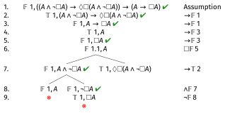
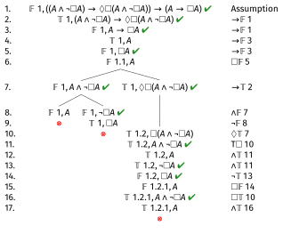
Upshot
Philosophers who want to endorse Every truth is knowable have only two options at this point.
- Say that somehow in translating their dictum into logic we messed up it’s content. And to be fair I have been a bit slippery here with what \(\Diamond\) means.
- Accept the conclusion that Every truth is known. This is easy enough if your motivation for this kind of philosophical view is theism. If not…

PHIL 305 | University of Michigan